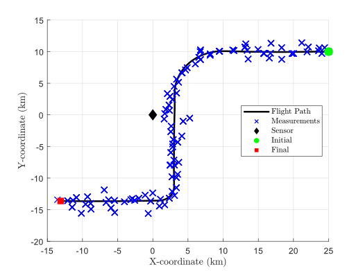

The air traffic control (ATC) scenario is a textbook example of a manuevering aircraft identified by a range and bearing measurements recieved from a radar.
The flight path includes the following manuevers:
See the Wikipedia page on air traffic control for more information.
Describe filtering...
Describe quadrature or numerical integration.